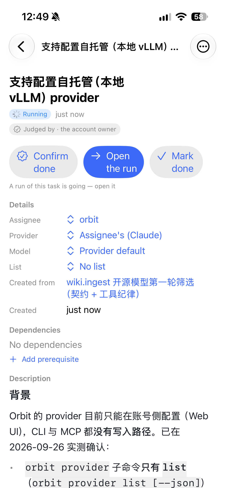
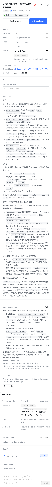

Orbit 的 provider 目前只能在账号侧配置（Web UI），CLI 与 MCP 都没有写入路径。已在 2026-09-26 实测确认：
orbit provider 子命令只有 list（orbit provider list [--json]）provider_listorbit capabilities --json 的全量命令表里没有任何 provider create/add/update~/.orbit/config.json 只有 runner 配置，不含 provider 定义由账号所有者亲自验证并确认。所有者会按下面三条检查：
orbit provider create --help（或 MCP provider_create）可用，且 orbit provider list --json 能列出新 provider，字段齐全http://127.0.0.1:8000 的 provider 后，orbit session create --provider <新 slug> 能启动会话并完成一个回合第 2 条若不可达，结项时必须给出明确证据——「配了但不生效」不算完成。
agent.session_filed
同一张任务（线上真实数据：「支持配置自托管（本地 vLLM）provider」，Running，所有者判定）。橙色编号对应文字说明；第 ③ 屏以后见第 2 张图。

区块和顺序与 web 手机端（TaskDetailPanel，393 宽，同一张任务的真实数据）一一对应；橙色编号相同即同一区块。iOS 现在缺的是 ⑥ Acceptance、⑦ Inputs、⑧ Attribution、⑨ Followed by，以及 Details 里的 Start at。

1234 5678 9101113 12操作行一行最多两个等宽大按钮：左边灰底是「给这件事下结论」，右边实心是「让它往前走」。按钮文案全用现有的词（web / OrbitKit 里已有）。
分支 orbit/t9-web-wiki-context-…-8039bf，tip f44ce03f6，已 push。
左半是本分支的真实组件 + 真实 index.css，chromium 1440 视口…
T9 已被 owner 确认，但落地时 REBASE 冲突，冲突文件是 src/web/src/index.css…
结论：不开任务、不 start、不动任何卡。
分支 orbit/t9-web-wiki-context-…-f6225a，tip 8f70e8c1c，已 push。